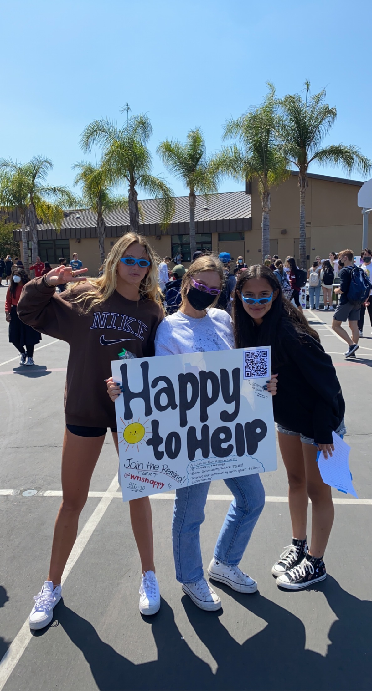

Amber Lee
I graduated from Woodbridge High School in June 2022 and I currently attend college at the University of California, Riverside. I am a first-year majoring in Business Economics and plan and going to graduate school as well to earn my MBA. I struggled to choose my major during my senior year of high school because I did not really settle on what I wanted to do or become. However, I knew that going to college was something that was expected of me by my parents and I felt like it was the next step in my journey too. So far, I think that I made the right decision, and I picked Business Economics as my major because math was my favorite subject in school. Additionally, being able to work with others while problem-solving was an interest of mine. My goal is to retire my parents, thus, making money through business is a challenge that I want to risk. Some things that I want to experience in college include internships and advice on what I should do in order to reach my goals.
I want to engage in a job that allows me to help others and solve problems that are challenging. Also, as a lot of people say, I want to make a difference and leave an impact so that my hard work pays off and has meaning to it. Family and friends are valuable to me, which encourages me to fight hard to make them proud.
Although I do not have a lot of work experience, I have done a fair share of volunteer work throughout middle school and high school. I also did some tutoring in math during my sophomore and junior year of high school. I learned a lot while babysitting and dogsitting as well. For more than half of my life, I have played soccer, both recreationally and competitively. Throughout those years I have learned a lot about myself and a lot of valuable lessons that I would not have been taught any other way. This includes perseverance, grit, teamwork, making mistakes and taking the responsibility to fix them, and more. An important one is leadership, I was lucky enough to be given the opportunity to be the captain of my team and I was not only able to lead my team but had the responsibility of making sure that all of my teammates were heard and on the same page. Finally, I am ambitious to learn more about myself and I can not wait to work with others with similar goals and interests.
Experience
Developer
• Treasurer of the Education for Children Club
• Soccer Coach
• Co-President of the volunteer club
Education
UC Riverside
Portfolio
